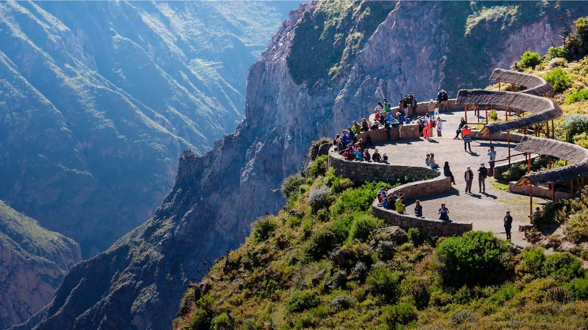
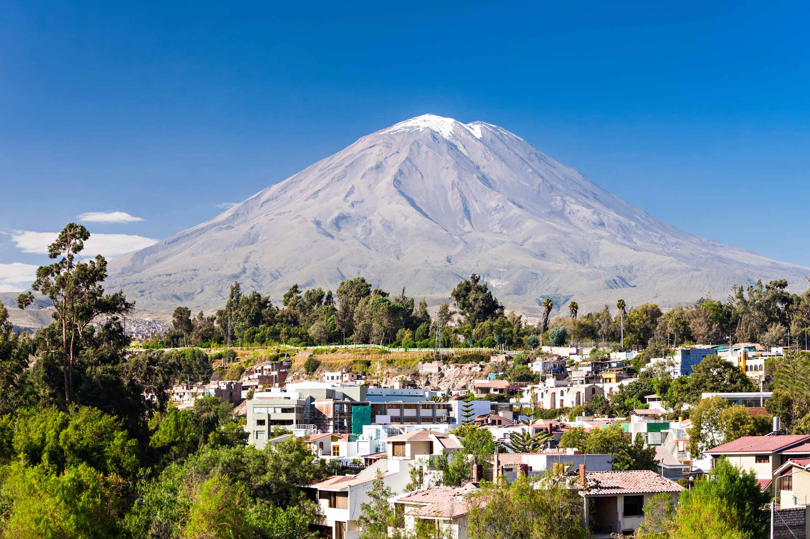
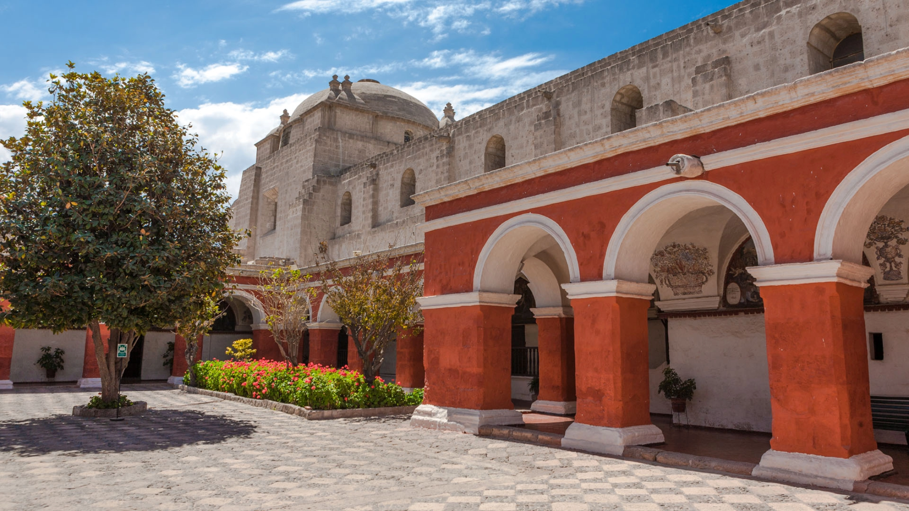
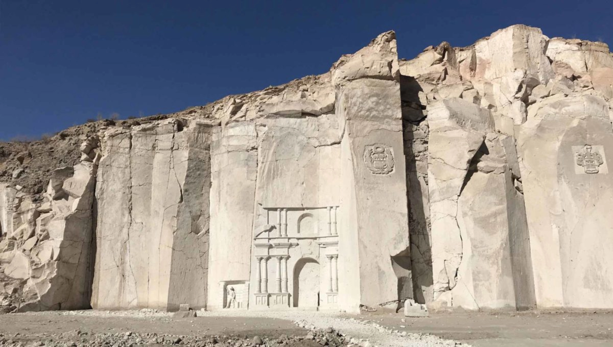

01
Cañón del Colca
Uno de los cañones más profundos de la Tierra. El Mirador de la Cruz del Cóndor permite ver al cóndor andino planear sobre el abismo.

La Ciudad Blanca
📍 Sierra sur del Perú · 2,335 m.s.n.m. · Cañón del Colca · Volcán Misti · Gastronomía regional
Llegada al Aeropuerto Rodríguez Ballón (AQP). Está muy cerca de la ciudad y permite traslados rápidos en taxi seguro.
Arquitectura tallada en sillar volcánico blanco. La capital gastronómica regional y sus picanterías tradicionales son paradas obligatorias.

Uno de los cañones más profundos de la Tierra. El Mirador de la Cruz del Cóndor permite ver al cóndor andino planear sobre el abismo.

Una ciudadela virreinal intacta de 20,000 m². Calles pintadas en tonos rojos y azules profundos, patios silenciosos y pasillos detenidos en el siglo XVI.

En las canteras de Añashuayco verás de dónde nace la ciudad. Enormes paredes blancas talladas por maestros canteros que continúan una tradición milenaria.